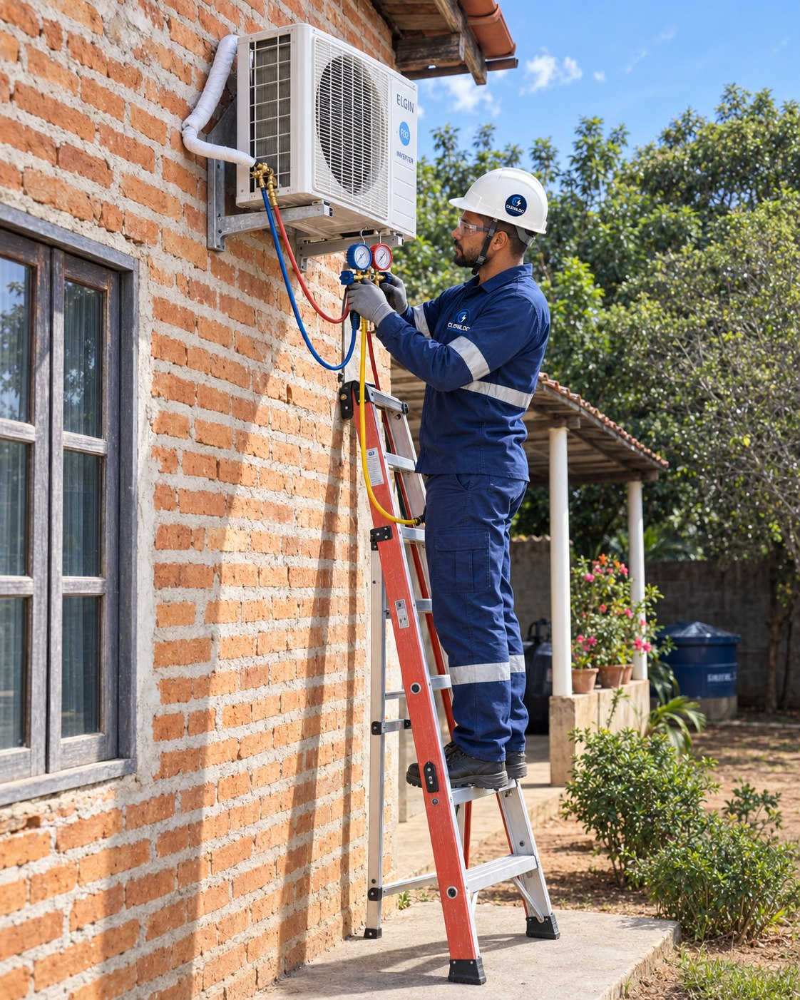

Diagnóstico elétrico
Reparos Elétricos
Investigação e correção de falhas em circuitos, quadros, conexões e componentes elétricos.
Solicitar orçamento
Identifique a falha e recupere a segurança.
O reparo começa pela avaliação dos sintomas e das condições da instalação.
Direcionamos a correção conforme a origem do problema e as necessidades do local.